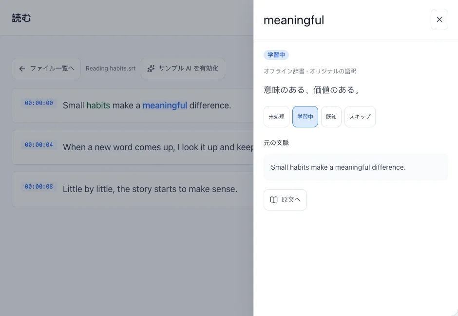
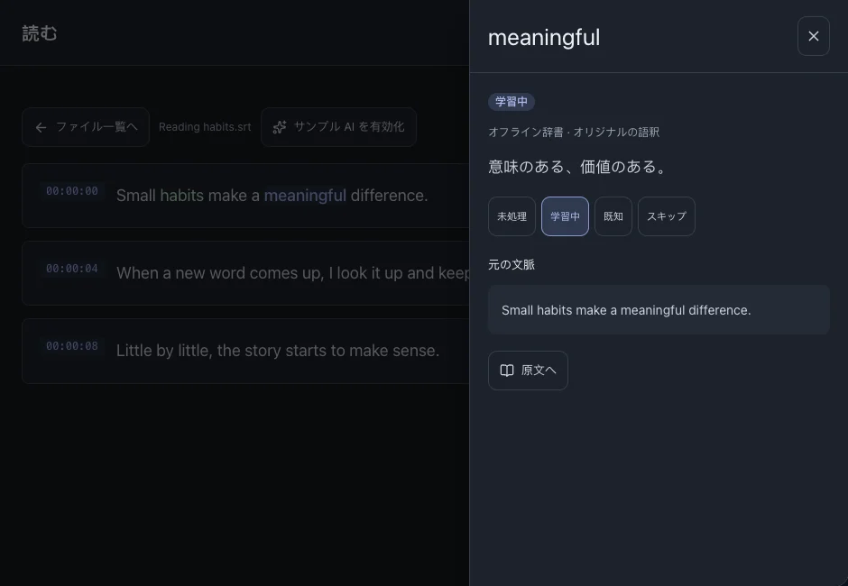

読む・辞書で調べる
字幕を読みながら、元の文で単語を調べられます。語釈のドロワーを閉じれば、そのまま読み続けられます。
このページの目次
単語を調べる
- ファイルを開き、字幕の単語を選びます。
- 語釈と元の文を確認します。デスクトップでは右側、モバイルでは下から開きます。
- 閉じて読み続けます。語釈がない場合は学習言語と辞書設定を確認してください。



関連する操作辞書管理
学習状態を変更する
復習したい語は「学習中」、理解している語は「既知」、学習しない項目は「スキップ」にします。「未処理」は未分類です。
- 単語の詳細で学習状態を変更します。
- 変更は「単語」と学習記録にも反映されます。
文脈とフレーズを理解する
AIは任意です。ローカルGemmaにはモデルの追加取得が必要です。クラウドを使う場合は設定したサービスに選択したテキストが送信されます。
- 「設定」でAIを設定して有効にします。
- ファイルまたは読書画面から分析を開始し、結果を待ちます。
- 検出されたフレーズで意味と原文を確認します。結果は言語・モデル・内容によって変わります。